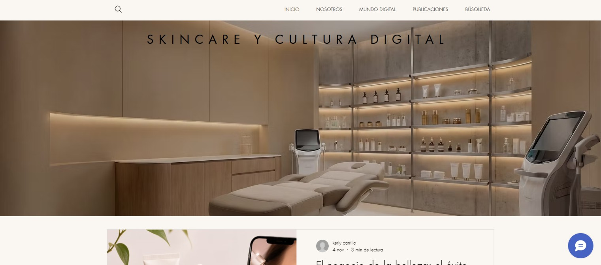
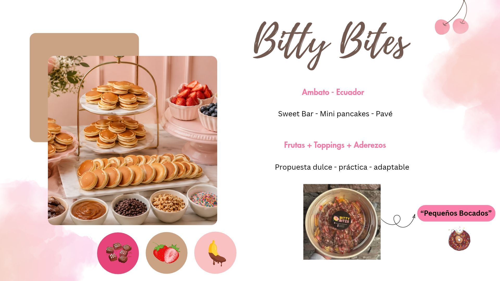
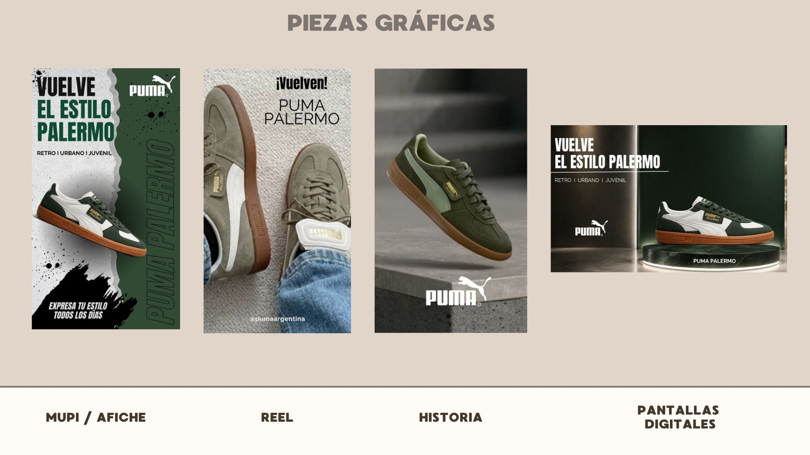
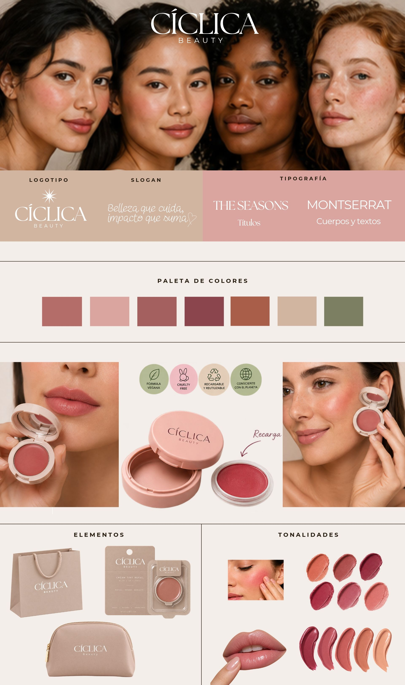
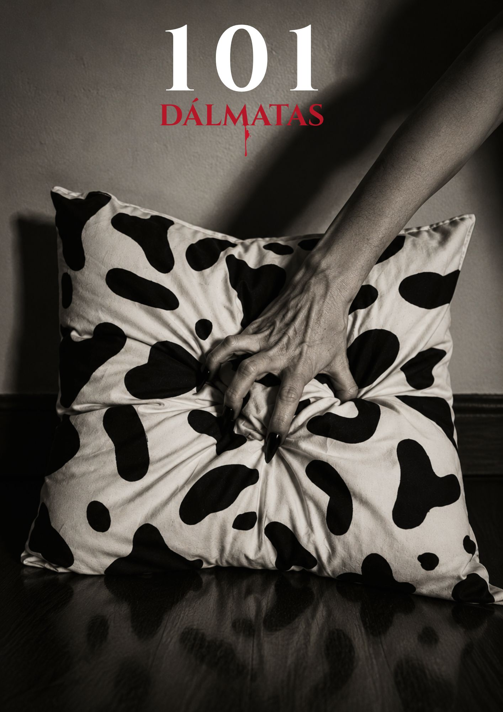
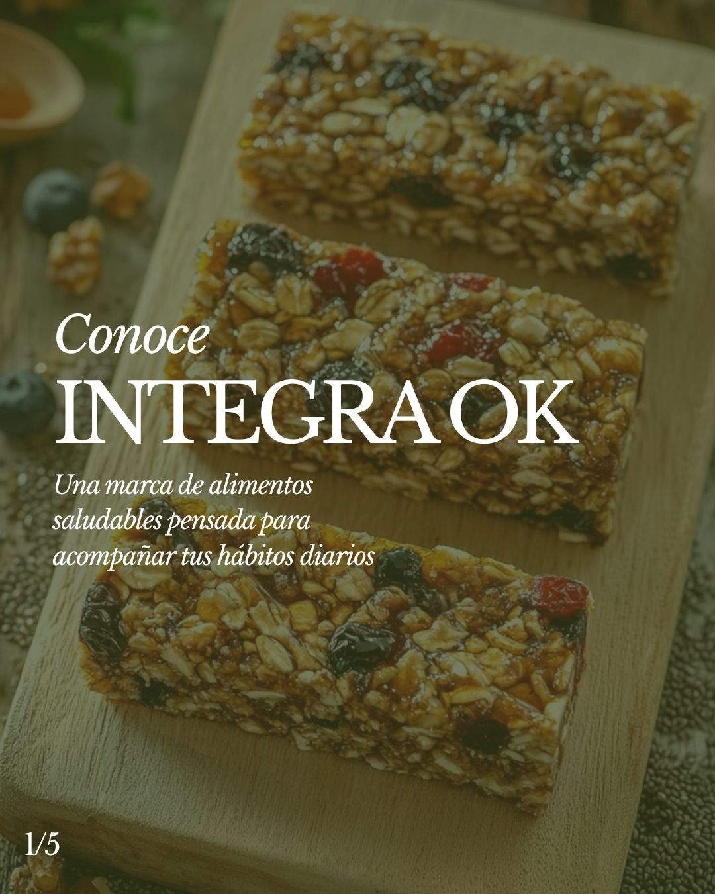

Hola, soy Kerly
PORTFOLIO CREATIVO
Una selección de proyectos realizados durante mi formación, donde exploro el diseño, la comunicación y la creación de contenidos.
SOBRE MÍ
Kerly Carrillo
Estudiante de Comunicación Digital
Me interesa crear propuestas visuales que comuniquen ideas de manera clara, creativa y funcional.
Disfruto explorar diferentes formas de comunicar, desarrollar ideas y convertirlas en proyectos visuales y digitales.
GALERÍA DE PROYECTOS

Taller de Redacción
Blog digital con cuatro géneros periodísticos.

Comercialización I
Propuesta de emprendimiento para Bitty Bites.

Publicidad I
Campaña de relanzamiento para Puma Palermo.

Comercialización II
Desarrollo de la marca de maquillaje vegano CÍCLICA Beauty.

Comunicación Digital I
Tres lenguajes gráficos inspirados en 101 Dálmatas.
Comunicación Oral y Escrita
Libro conceptual sobre la migración.

Relaciones Públicas I
Programa estratégico de comunicación Integra OK.